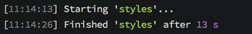
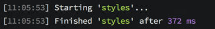

PostCSS
by Tachun LIN | @tachunL
CSS is not smart
can’t use vars
$brandColor: red;
body {
color: $brandColor;
}
can’t nested classes
.foo {
.bar {
background-color: red;
}
}
no mixins
@mixin vertical-gradient( $top, $bottom ) {
background: linear-gradient( top, $top 0%, $bottom 100% );
}
Today's Solution is...
Css preprocessor
Sass (.scss or .sass)
Less (.less)
Stylus (.styl)
BUT !!
front-end is a hipsters' job !!
we need a brand new front-end framework every 6 months
and !!
a new way to write css
What is PostCSS?
PostCSS is a tool for...
transforming CSS with JS plugins
PostCSS work with build tools...
Grunt, Gulp, webpack, Broccoli, Brunch, ENB, Fly, Stylus, Duo and Connect/Express.
npm install --save gulp-postcss
PostCSS has Only...
a CSS parser
a node tree stringifier
a CSS node tree API
a source map generator
PostCss Plugins...
receives a CSS node tree
transforms it
returns the modified tree
example???
rem
// With preprocessor:
@mixin font-size($sizeValue: 16) {
font-size: $sizeValue + px; // IE fallback
font-size: ($sizeValue / 16) + rem;
}
.convert {
@include font-size(24); // return font-size: 1.5rem;
}
// Always someone will do this:
.con {
font-size: 24px; // should use @include font-size(24);
}
// With PostCSS & pxtorem plugin
.convert {
font-size: 16px; // converted to 1rem
}
How it works?
https://github.com/cuth/postcss-pxtoremat2x
.logo {
background: url('/images/logo.png') no-repeat 0 0 at-2x;
}
Output in css:
.logo {
background: url('/public/images/logo.png') no-repeat 0 0;
}
@media (min--moz-device-pixel-ratio: 1.5),
(-o-min-device-pixel-ratio: 3/2),
(-webkit-min-device-pixel-ratio: 1.5),
(min-device-pixel-ratio: 1.5),
(min-resolution: 144dpi),
(min-resolution: 1.5dppx)
{
.logo {
background: url('/public/images/logo@2x.png') no-repeat 0 0;
}
}
How it works?
https://github.com/simonsmith/postcss-at2xIt's cool but...
not enough?
postcss's cool part
Modularity
postcss-import, postcss-simple-vars, postcss-mixins, postcss-nested, autoprefixer, cssnano
or
precss
cssnano is awesome !!
h1::before, h1:before {
margin: 10px 20px 10px 20px;
color: #ff0000;
-webkit-border-radius: 16px;
border-radius: 16px;
font-weight: normal;
font-weight: normal;
}
h1:before{margin:10px 20px;color:red;border-radius:16px;font-weight:400}
Lightweight
We won’t use every feature in css preprocessor
Faster
3-30 times faster than preprocessor
10,000 selectors, each with 5 properties using the function. This makes 50,000 things to process
Sass: 13s
PostCss: 372ms
easy to create plugin
It's javascript!
API documentpostcss-plugin-boilerplate
How to use?
gulpfile.js
var processors = [
require('postcss-import')({
from: 'src/css/main.css'
}),
require('postcss-simple-vars'),
require('postcss-mixins'),
require('postcss-nested'),
require('autoprefixer')({
browsers: ['last 2 versions', '> 2%']
}),
require('cssnano')
];
gulp.task('postcss', function() {
return gulp.src('src/css/**/*.css')
.pipe(postCSS(processors))
.pipe(gulp.dest('build/css'))
});
Where to find plugins?
PostCss github
postcss.parts
A little bit too far...
CSS next
playgroundConclusion
Start with a small project
Or mix with sass, less or stylus
postcss-font-magician
body {
font-family: "Alice";
}
@font-face {
font-family: "Alice";
font-style: normal;
font-weight: 400;
src: local("Alice"), local("Alice-Regular"),
url("http://fonts.gstatic.com/s/alice/v7/sZyKh5NKrCk1xkCk_F1S8A.eot?#") format("eot"),
url("http://fonts.gstatic.com/s/alice/v7/l5RFQT5MQiajQkFxjDLySg.woff2") format("woff2"),
url("http://fonts.gstatic.com/s/alice/v7/_H4kMcdhHr0B8RDaQcqpTA.woff") format("woff"),
url("http://fonts.gstatic.com/s/alice/v7/acf9XsUhgp1k2j79ATk2cw.ttf") format("truetype")
}
body {
font-family: "Alice";
}
require('postcss-font-magician')({
hosted: '../fonts'
});
postcss-simple-vars
// colors.js
module.exports = {
blue: '#056ef0'
}
// gulpfile.js
var colors = require('./config/colors');
var vars = require('postcss-simple-vars')
gulp.task('css', function () {
return gulp.src('./src/*.css')
.pipe(postcss([ vars({ variables: colors }) ]))
.pipe(gulp.dest('./dest'));
});
// css
body{
background-color: $colors.blue;
}